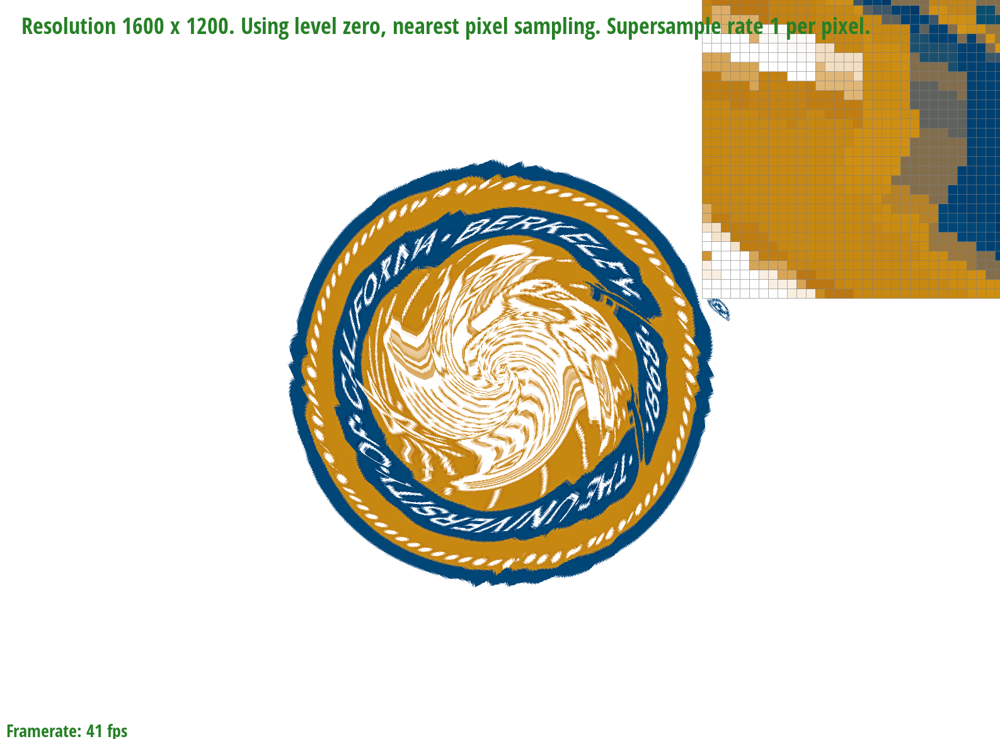

Overview
In this homework, we implemented various algorithms to improve image quality and tested them on some images. We first implemented a method of drawing triangles for us to draw pixels and produce images. From there, we pursued various ways analyzing and sampling in the screen space, in a sample buffer under-the-hood, and in the levels of our texture space as methods of antialiasing to improve our picture quality. These are many ways to blur and smooth an image to eliminate visual artifacts, and they each have tradeoffs relating to computing speed, memory usage, and antialiasing capabilities. We've learned some things about the inner workings of C++, the importance of tracking our coordinates in the screen space and sample buffer, how to implement antialiasing techniques, and how to debug based off of test images.
Section I: Rasterization
Part 1: Rasterizing single-color triangles
We rasterize triangles using three given vertex points to define three-line equations and a bounding box for the points. Using the bounding box as our frame ensures we don't examine every pixel in the screen, which is unnecessary, time-consuming, and may pose other problems. These three points and lines form a triangle outline. We then use these three-line equations to check if the pixel we are sampling is inside or outside the triangle outline. If it is "inside" for all three equations, then we color the pixel. We also need to accommodate for the winding of the triangle, whether it is constructed clockwise or counterclockwise. Depending on the position of our 3 given points, our code will adjust to draw the triangle correctly..
Our algorithm is no worse than one that checks each sample within the bounding box of the triangle because it is doing exactly this. We are sampling through every pixel in the bounding box of the triangle, and checking if it is "inside" or "outside." Pixels that are inside the triangle will be drawn with their respective colors.

Part 2: Supersampling
To implement supersampling, we first expanded our sample_buffer by multipling its size by sample rate. We also modified the rasterization pipeline by "scaling" our screen and multiplying the width and height by sqrt(sample_rate)l. In addition, we multiplied our sample_buffer.resize and set_framebuffer_target by sample_rate to properly scale our screen space with changes. This acccounts for the subdivision of pixels into more pixels according to the supersample rate. To traverse the sample buffer, our supersampling algorithm involves four nested for loops. The first two allow us to traverse through the sample buffer by a step of sqrt(sample_rate) so as to traverse through to the supersampled square of the next pixel. The next two index us into the supersampled square of the pixel. Inside each supersampled square, we are filling out our sample_buffer with the appropriate pixel location. In the resolve_to_framebuffer method, we then access the color of each subpixel, sum the RGB values together, and then divide by the supersample rate. This averaged color value we then send back to the original pixel in the framebuffer and display it. We also accounted for supersampling in fill_pixel by setting all of the colors in the supersampled square to be the same, so that when it gets averaged later, the color stays the same. This color averaging process antialises our triangles because we essentially blur the changes in the pixels as the colors change, decreasing that visual artifact. Supersampling is useful because by increasing the number of samples per pixel and then averaging the colors back into a single pixel when we downsample back into the original coordinate system, we obtain a more precise and smooth image.
Sample Rate = 1
Sample Rate = 4
Sample Rate = 9
Sample Rate = 16
From sampling rate 1 to 16, it is apparent that the edges of the triangles become blurrier and exist less jaggies. In the image, the red triangle is visibly smaller in the area it covers since its borders blurs with the neighbouring white pixels. We can also see in the zoomed in top right corner, that as sample rate increases, there are more lighter coloured pixels along the edges of the triangles.
Part 3: Transforms
Section II: Sampling
Part 4: Barycentric coordinates
Barycentric coordinates is the concept where the visualization of a point inside a triangle (color, texture, etc.) can be approximated by calculating and using weights of the three vertex points of the triangle. Given a point inside a triangle, we can calculate the barycentric coordinates (the weighting) of the three vertex points and then apply the barycentric coordinates to whatever we are trying to visualize to interpolate the triangle's image. You can see in the below image how the colors start to blend into a gradient as they near the geometric center of the triangle (image pulled from lecture).
Part 5: "Pixel sampling" for texture mapping
Pixel sampling is the process of translating screen pixels to texture pixels, 1-to-1, so that we can correlate a texture pixel to a screen pixel. We implemented this by using Barycentric coordinates to translate screen pixel coordinates into texture space coordinates, and then using either Nearest or Bilinear sampling (described below) to map the texture onto the screen/surface.
Nearest Sampling: After translating a point in the screen space to a point in the texture space, nearest sampling tries to find the closest point in the texture space to our translated point from the screen space by rounding our translated point. Nearest sampling then matches the texture of the closest point to our translated point and displays it on our screen.
Bilinear Sampling: Instead of rounding like in the nearest sampling method, bilinear sampling utilizes weighting and interpolation to display generally smoother images. Bilinear sampling relies on four reference texture points (in our code those were the floors and ceilings of each pixel), and we use three 1D linear interpolations to find the relative weighting of these four points on the pixel we are displaying. Since we are interpolating, the texture displayed will potentially combine components from all four points and ease the transition between these four reference points.
|

|
|
|
|
|
The largest difference occurs between nearest sampling at 1 sample per pixel and bilinear sampling at 16 samples per pixel. This is because it is performing at different sample rates and different sampling methods. When using a lower sample rate, there are more jaggies in the images, and when at a higher sample rate, there are fewer jaggies, but blurrier borders for shapes. Bilinear sampling also blurs the images more in comparison to nearest sampling. This is because bilinear sampling performs linear interpolation using nearby coordinates, creating a blended/smooth color transition effect. Nearest sampling just matches the pixel to the nearest texture in the texture space.
There will be a large difference between the two methods when the points surrounding the pixel are very differnet and/or changing rapidly relative to each other. Bilinear sampling would give us a blended, gradient-like view of the nearby texels while nearest sampling would round to the nearest texel and display that.
Part 6: "Level sampling" with mipmaps for texture mapping
Level sampling involves analyzing the texture space and sampling at different mipmap levels according to how fast the pixel is changing relative to its surroundings. We implemented it by first calculating the three sets of barycentric coordinates of (x,y), (x+1,y), and (x,y+1) in rasterize_textured_triangle that would help us obtain three uv points. These three uv points give us the information to obtain difference vectors p_uv, p_dx_uv, and p_dy_uv, and then calculate the mipmap level. Texture::sample then calls this mipmap level and has three different settings for level sampling. L_ZERO is the same as Task 5 where we use pixel sampling with a zero-th MipLevel. L_NEAREST does a basic rounding of our calculated mipmap level, and L_LINEAR interpolates between the floor and ceiling of the calculated mipmap level to give us a "weight" value. We then use this "weight" value to obtain an interpolated Texture between the textures of the floor and ceiling of the calculated mipmap level. Our task 5 algorithm will then rasterize the triangles and draw the image based on which setting we dynamically have selected.
Tradeoffs Table
| Methods/Attributes | Description | Speed | Memory Usage | Antialising Power |
|---|---|---|---|---|
| Pixel Sampling | A pixel is sampled from the screen space and fetches one texel to be displayed at its position. | Faster than the other two methods because only one pixel is sampled at a time. | Low memory usage as only one pixel is sampled at a time | Relatively weaker antialiasing capabilities because less samples are taken and less averaging is done. |
| Level Sampling | Pixel sizes are determined and then used to display texels of different levels. | Faster than supersampling but slower than pixel sampling. Exact speed depends on the implementation of mipmaps and potential shortcuts/early exits. | Greater memory usage because more sampling of pixels and texels is collected and saved. | Decent antialiasing quality as different levels of texture are used based on relative pixel distance. |
| Supersampling (Number of Samples per Pixel) | Subdivide a pixel and take multiple pixels before averaging and downsampling these values to return a more nuanced and detailed picture. | The slowest method out of these three, especially if we are supersampling at a much higher rate. | High memory usage as each pixel is subdivided so our algorithm can sample multiple times and then average our samples. All of this information has to be stored and then operated with. | Really good antialiasing capabilities as averaging numerous subdivisions in the pixel allows us to blur and smooth more effectively. |
|
|
|
|
|
|
|
|
|
Section III: Art Competition
If you are not participating in the optional art competition, don't worry about this section!